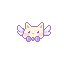

Yume
Your personal data dashboard
Explore your data with Yume
Total Users
Loading...
Total Posts
Loading...
Total Comments
Loading...
Average Comments per Post
Loading...
Posts by User
Top 5 Most Commented Posts